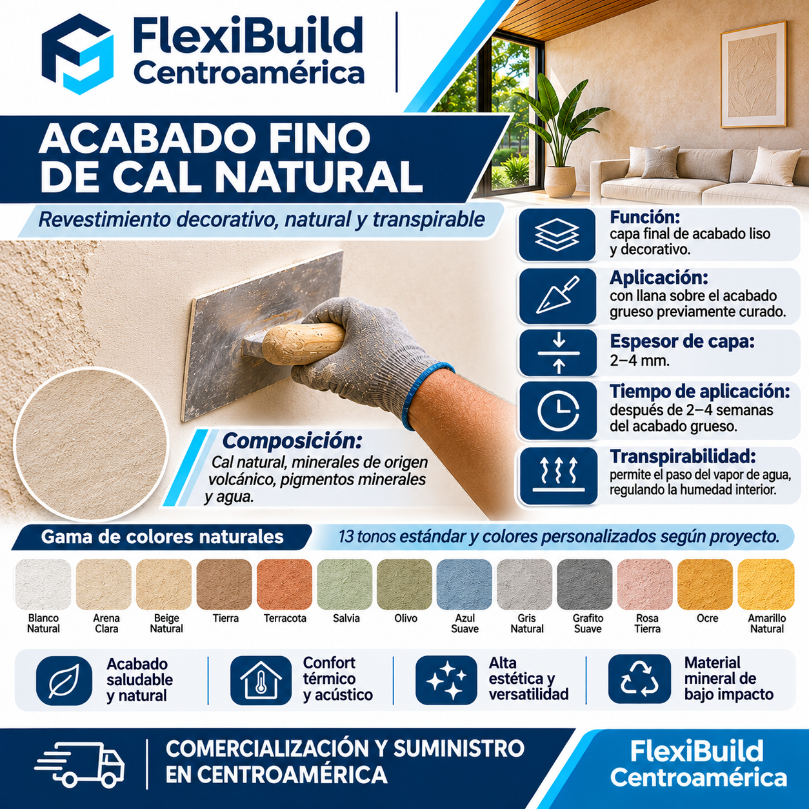
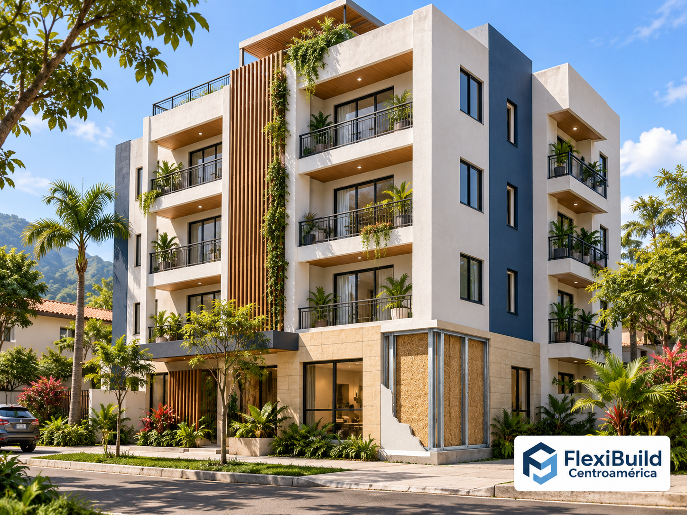

1. Bloque biobasado para muros
Referencia para cerramientos no estructurales. Formato visual: 600 × 300 × 200 mm. No utilizar en cimientos ni en contacto con agua estancada.
Distribución especializada · Nicaragua y Centroamérica
FlexiBuild Centroamérica comercializa y coordina el suministro de bloques, paneles de fibras vegetales y acabados minerales de origen agrícola. Nicaragua es nuestro mercado prioritario; también atendemos consultas de Guatemala, Belice, Honduras, El Salvador, Costa Rica y Panamá.
Atendemos empresas constructoras, desarrolladores inmobiliarios, empresas de desarrollo constructivo, arquitectos, ingenieros, ferreterías, distribuidores, propietarios y residentes extranjeros.
Solicitar catálogo y cotización Ver productos y aplicaciones
Una línea comercial para el sector profesional
FlexiBuild facilita el acceso comercial a estas soluciones, coordina información técnica y evalúa requerimientos de suministro para obras y canales de distribución.
Catálogo comercial · Nicaragua
Las especificaciones impresas en las imágenes son referencias preliminares. Deben contrastarse con la ficha técnica vigente del fabricante antes de especificar, presupuestar o instalar.
Referencia para cerramientos no estructurales. Formato visual: 600 × 300 × 200 mm. No utilizar en cimientos ni en contacto con agua estancada.

Panel para evaluar en muros, cielorrasos y aplicaciones protegidas. Formato visual: 1.000 × 600 × 50 mm. Verificar prestaciones e instalación con ficha vigente.

Variante propuesta de 25,4 mm para muebles de cocina, closets, estanterías y revestimientos interiores; pendiente de confirmación del proveedor.

Capa base para nivelación de muros. Espesor visual de referencia: 8–12 mm por capa; confirmar preparación y consumo con ficha vigente.

Capa final decorativa. Espesor visual de referencia: 2–4 mm. Confirmar carta de tonos y disponibilidad con el proveedor.
Clientes profesionales y canales comerciales
Suministro por obra, cantidades y coordinación de entregas.
Materiales para proyectos residenciales, comerciales y turísticos.
Información técnica y revisión preliminar de compatibilidad.
Compras comerciales, volúmenes, logística y condiciones de canal.
Aplicaciones, especificaciones y coordinación por proyecto.
Atención en español e inglés para construir o remodelar en Nicaragua.
Aplicaciones arquitectónicas
Estas imágenes muestran aplicaciones conceptuales y referencias de integración. No representan obras ejecutadas por FlexiBuild ni certifican que cada producto sea apto para todos los usos; la compatibilidad debe comprobarse para cada proyecto.

Referencia arquitectónica para evaluar soluciones de cerramiento en proyectos residenciales.
Aplicaciones de diseño residencial sujetas a la selección técnica de los materiales.

Referencia visual para desarrolladores y empresas constructoras.

La conexión, fijación y compatibilidad se definen mediante diseño y documentación técnica.

Coordinación de arquitectura y componentes según el alcance del proyecto.
Suministro y ejecución
Puede solicitar suministro únicamente o pedir una evaluación de diseño, coordinación técnica y construcción por encargo. La ejecución se cotiza tras revisar sitio, planos, cantidades, compatibilidad del producto, normativa y responsabilidades. El alcance se acuerda por escrito.
Mercado prioritario
Concentramos el desarrollo comercial en Nicaragua. También recibimos solicitudes de los otros seis países de Centroamérica. Cobertura, importación, logística y entrega se confirman por producto y destino.
Preguntas frecuentes
No. Nuestra actividad es comercialización, distribución y coordinación de suministro.
Sí. Atendemos consultas por proyecto y canal comercial. Mínimos, precios por volumen y disponibilidad se confirman en cada cotización.
Podemos evaluar y cotizar diseño, coordinación y construcción cuando las fichas, el diseño y las condiciones de obra lo permitan.
No debe asumirse. Los usos y limitaciones deben confirmarse con documentación del fabricante y diseño profesional.
Indique ciudad, producto, aplicación, cantidad y si necesita solo suministro o también diseño y construcción.